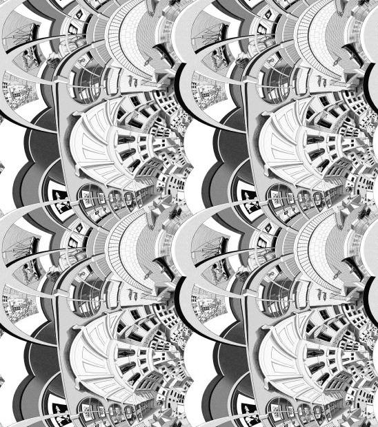

This is a recreation of a project I made in Processing last year (which I might also put on Github at some point). Escher's lithograph Print Gallery depicts a man in an art gallery looking at a painting which seems to contain that very art gallery and person inside it. Recently, I stumbled across a paper that explained how the mind-bending painting is actually a distortion of the Droste Effect, just with an added rotation to the exponential map of the image. This allowed them to (among other things) undo the distortion, revealing the origional drawing escher modelled the lithograph on. The same group of people also made a website which explains the process more visually, as well as including some of the different distortions that can be made, but I wanted to have a little more control over the process. So, I made this! Below is a recreation of Escher's Print Gallery (albeit more pixelated). Click on the screen and move the mouse to zoom in or out, and use the W,A,S, and D keys or directly mess with the 'Distorition Parameters' below to change the distortion (Escher's distortion is 1,1; the undistorted version is 1,0). You can also change the size of the window and screen resolution at any time. Have fun!

Parameters:
,
Screen Resolution:
x
Screen size:
x